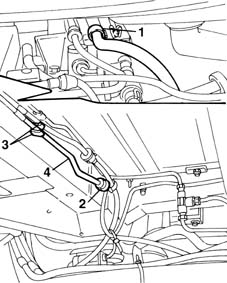
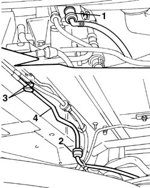

1040B32 FUEL FILLER PIPE UNION SLEEVE - R + R
- Path
- Procedures > 10 ENGINE UNIT > 1040 FUEL TANK AND PIPES > 1040B FUEL SUPPLY/RETURN CIRCUIT PIPE > 1040B32 FUEL FILLER PIPE UNION SLEEVE - R + R
- Kind
- repair procedure (removal / refitting; the operation number is the code)
- Applies to
- engines: 1.6 16v; all production periods; only with equipment: BIPOWER
- Interactive page
- https://sloeber94.github.io/elrnDB-fMltpl/en/#/2891456
Applies to: engines: 1.6 16v; production: fino a 05/04; only with equipment: BIPOWER
 Removing
Removing
 Refitting
RefittingPlace the car on a ramp.
1. Disconnect the supply pipe from the rapid connector in the engine compartment.
Raise the car.
2. Disconnect the supply pipe from the rapid connector at the join with the rear section.
3. Release the supply pipe from the bands on the bodyshell.
4. Remove the front section of the fuel supply.

Applies to: engines: 1.6 16v; production: fino a 05/04; only with equipment: BIPOWER
Refitting
RemovingPosition the front section of the fuel supply.
Connect the front section of the pipe to the rapid connector for the rear section of the pipe.
Secure the pipe to the retainign bands on the bodyshell.
Lower the vehicle.
Connect the supply pipe to the rapid connector located in the engine compartment.
Remove the vehicle from the ramp.
Applies to: engines: 1.6 16v; production: da 06/04; only with equipment: BIPOWER
Removing
RefittingPosition the vehicle on a lift.
Op. 1042A02 C.N.G. - FUEL SYSTEM SAFETY CHECK
Op. 1042E60 CNG CYLINDER UNIT PROTECTION SEAL - R R
Op. 1042A74 RIGHT CYLINDER OF CNG CYLINDER UNIT R R
1. Disconnect the supply pipe from the fast-on fitting in the engine compartment.
Raise the vehicle.
2. Disconnect the delivery pipe from the fast-on fitting joining it to the rear section.
3. Release the delivery pipe from the strips on the body.
4. Remove the front fuel delivery hose section.

Applies to: engines: 1.6 16v; production: da 06/04; only with equipment: BIPOWER
Refitting
RemovingRemove the front fuel delivery hose section.
Connect the front section of the pipe to the fast-on fitting on the rear section of the pipe.
Secure the pipe to the fastening strips on the body.
Lower the vehicle.
Connect the supply pipe to the fast-on fitting in the engine compartment.
Op. 1042A06 C.N.G. - FUEL SYSTEM CHECK FOR ANY LEAKS USING ELECTRONIC DETECTOR FOLLOWING OPERATIONS
Op. 1042E60 CNG CYLINDER UNIT PROTECTION SEAL - R R
Remove the vehicle from the lift.